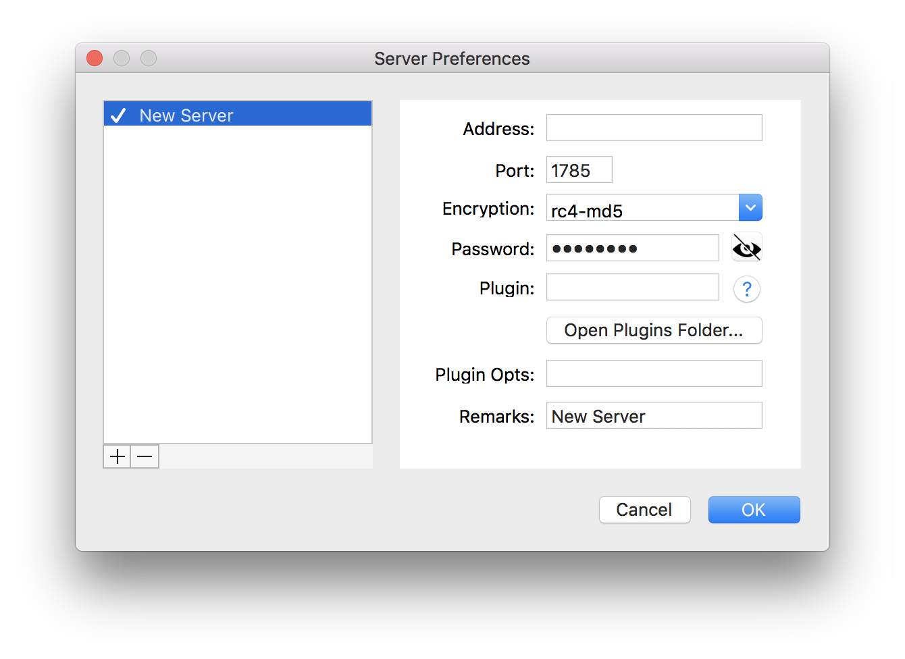

Shadowsocks配置日志
服务端配置
安装shadowsocks服务端
1 | pip install shadowsocks --user |
安装成功后添加环境变量
编辑 .bashrc 或 .zshrc (具体路径使情况而定)
1 | export PATH=""$PATH:.local/bin" |
若能成功展示shadowsocks版本，则安装成功
1 | ssserver --version |
编写shadowsocks配置文件
1 | vim shadowsocks.json |
server后改为服务端ip地址 (ifconfig)
1 | { |
启动服务端ssserver服务
1 | ssserver -c shadowsocks.json |
若产生Traceback报错(不一定能解决，有时因为端口被占用)
更改shadowsocks中的python文件
1 | vim .local/lib/python3.7/site-packages/shadowsocks/crypto/openssl.py |
1 | :%s/cleanup/reset |
再次启动服务即可
客户端配置
在GitHub中下载相应版本的Shadowsocks客户端
添加服务器相关配置(ip,port,password)
encryption 改为 json 文件中的 rc4-md5

将代理模式设为全局模式(Global)
大功告成